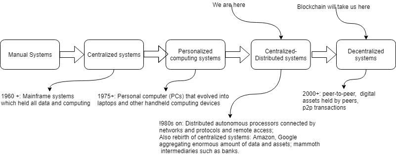
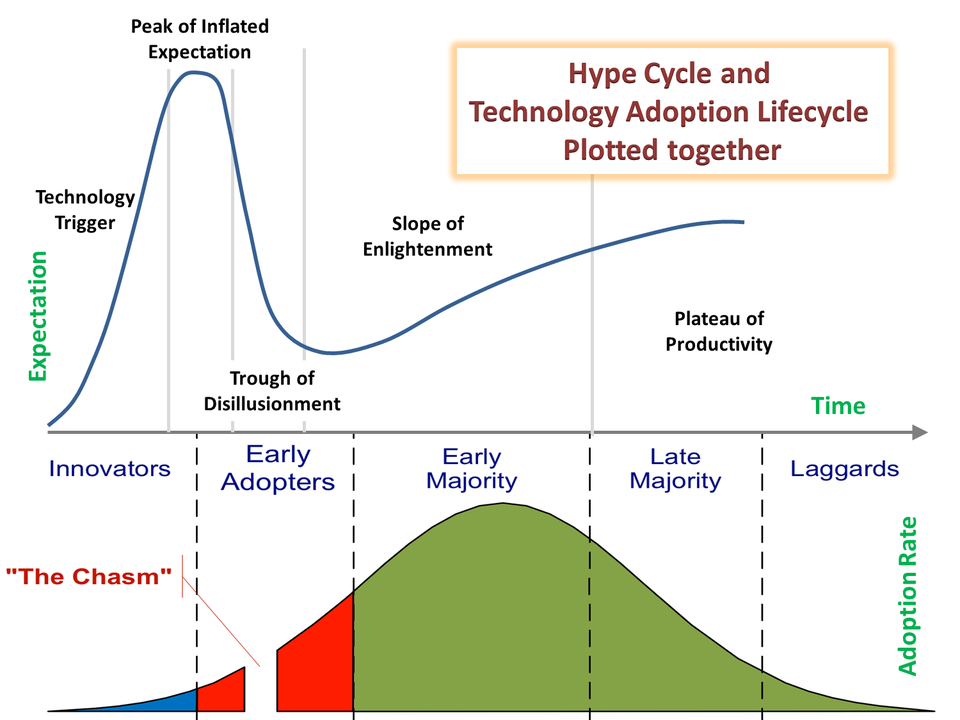
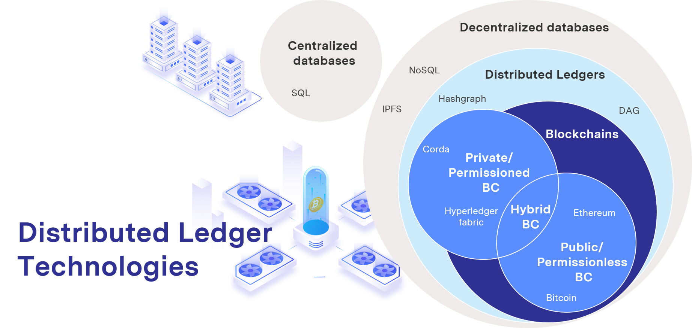
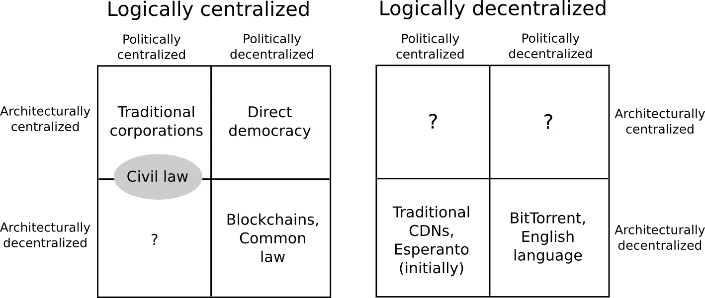

<!doctype html>
<html lang="en">
  <head>
    <meta charset="utf-8">

    <title>Fundamentals of Backend and Blockchain Development</title>

    <meta name="author" content="Dhruvin Parikh">

    <meta name="apple-mobile-web-app-capable" content="yes" />
    <meta name="apple-mobile-web-app-status-bar-style" content="black-translucent" />

    <meta name="viewport" content="width=device-width, initial-scale=1.0, maximum-scale=1.0, user-scalable=no, minimal-ui">

    <link rel="stylesheet" href="../../reveal.js/css/reveal.css">
    <link rel="stylesheet" href="../../reveal.js/css/theme/black.css" id="theme">

    <!-- Code syntax highlighting -->
    <link rel="stylesheet" href="../../reveal.js/lib/css/zenburn.css">

    <!-- Printing and PDF exports -->
    <script>
      var link = document.createElement( 'link' );
      link.rel = 'stylesheet';
      link.type = 'text/css';
      link.href = window.location.search.match( /print-pdf/gi ) ? '../../reveal.js/css/print/pdf.css' : '../../reveal.js/css/print/paper.css';
      document.getElementsByTagName( 'head' )[0].appendChild( link );
    </script>

    <!--[if lt IE 9]>
    <script src="../reveal.js/lib/js/html5shiv.js"></script>
    <![endif]-->

    <style>
      .reveal .slides h1, .reveal .slides h2, .reveal .slides h3 {
        text-transform: none;
      }

      .two-column {
        display: flex;
        flex-wrap: wrap;
      }

      .two-column em {
        margin: 20px;
      }

      .reveal .big-and-bold {
        font-weight: bold;
        font-size: 135%;
      }

      .reveal .shrunk-a-bit {
        font-size: 90%;
      }

      .reveal .shrunk-a-bit pre {
        width: 100%;
      }

      .reveal pre {
        width: 100%;
      }

      .reveal .highlight {
        color: yellow;
        font-weight: bold;
      }

      .reveal .highlightRed {
        color: red;
        font-weight: bold;
      }

      .left {
        left:-8.33%;
        text-align: left;
        float: left;
        width:50%;
        z-index:-10;
      }

      .right {
        left:31.25%;
        top: 75px;
        text-align: left;
        float: right;
        z-index:-10;
        width:50%;
      }
    </style>
  </head>

  <body>
    <div class="reveal">
      <div class="slides">

<!------------------------------------------------------->


<section data-markdown><script type="text/template">

## CSBC 1000 - Fundamentals of Backend and Blockchain Development

### Class 3: Blockchain from first principles 

*Dhruvin Parikh*

</script></section>


<section data-markdown><script type="text/template">

## Class Plan
* Decentralized evolution
* What is Blockchain?
* Public Blockchains
* Permissioned Blockchains 
* Discussion
* Quiz
* Class 2 challenges
* Project

</script></section>

<section data-markdown><script type="text/template">

## Erstwhile

* Promise for "peer-to-peer" version of electronic cash
 * Payment can be sent directly to the recipient 
 * No need intermediate institution 
* [Bitcoin Whitepaper](https://bitcoin.org/bitcoin.pdf)

</script></section>

<section data-markdown><script type="text/template">

## Ethereum

* Vitalik Buterin along with other invented Ethereum
* Replicated system design of bitcoin
  * Adding ability to design and execute logic on blockchain network 
* First large scale project to do more with decentralized technology

</script></section>

<section data-markdown><script type="text/template">

## Blockchain enterprise adoption

* Enterprises created there own implementation of blockchain
 * Hyperledger fabric
 * Diem
 * Corda by R3
 * Quorum
 * Onyx
* Blockchain is a “team sport”
 * inclusive of governments and enterprise will help move the field forward and drive adoption faster.
 * building interoperable decentralized systems.

</script></section>

<section data-markdown><script type="text/template">

## Why you should know?

* Understanding industry and trends
* Help you navigate strategically and decide what skills to pick up to stay ahead of curve

</script></section>

<section data-markdown><script type="text/template">

## Evolution of Computing Systems



</script></section>

<section data-markdown><script type="text/template">

## Adoption Curve



</script></section>

<section data-markdown><script type="text/template">

## Blockchain

*A Distributed Ledger Technology (DLT) comprises any digital system and its supporting components that enables the recording of transactions in an order agreed upon by stakeholders who hold multiple copies of the record (or its shards) without relinquishing total control to a single entity. This record is referred to as a “ledger” and is often immutable in the sense that new data can only be appended to the ledger without modifying existing data.*

</script></section>


<section data-markdown><script type="text/template">

## Centralized vs Decentralized vs Distributed


* DLTs are an abstract concept

</script></section>

<section data-markdown><script type="text/template">

## Distributed ledger technologies



</script></section>

<section data-markdown><script type="text/template">

## Tweaking 2-tier architecture

* Can connect to DLT network using a software called "client"
* Blockchain is server. it can store data
* Centralized server running the application layer is a central point of failure 
 * Direct connection between presentation layer and data layer
* Direct connection from the presentation layer to the data layer is possible

</script></section>

<section data-markdown><script type="text/template">

## two-tier DApp architecture


</script></section>


<section data-markdown><script type="text/template">

## Types of Decentralization

* Architectural decentralization
* Political decentralization
* Logical decentralization

</script></section>

<section data-markdown><script type="text/template">

## Architectural decentralization

* how many physical computers is a system made up of? 
* How many of those computers can it tolerate breaking down at any single time?

</script></section>

<section data-markdown><script type="text/template">

## Political decentralization

* how many individuals or organizations ultimately control the computers that the system is made up of?

</script></section>

<section data-markdown><script type="text/template">

## Logical decentralization

* does the interface and data structures that the system presents and maintains look more like a single monolithic object, or an amorphous swarm? 
* One simple heuristic is: if you cut the system in half, including both providers and users, will both halves continue to fully operate as independent units?

</script></section>

<section data-markdown><script type="text/template">

## Decentralization dimensional chart



</script></section>

<section data-markdown><script type="text/template">

## Reasons for decentralization

* Fault tolerance
* Attack resistance
* Collusion resistance

</script></section>

<section data-markdown><script type="text/template">

## How blockchain works

* Append only linked list
* Hashing, blocks, blockchain, distributed and tokens
* [Visual demo](https://txstreet.com)
* [Eth build Sandbox](https://sandbox.eth.build/)
* [Blockchain demo by andersbrownworth](https://andersbrownworth.com/blockchain/hash)

</script></section>

<section data-markdown><script type="text/template">

## Different types of Blockchains 

* Private/Permissioned - hyperledger fabric
* Public/Permissionless - Ethereum, Bitcoin
* Consortium/Hybrid

</script></section>


<section data-markdown><script type="text/template">

## Public Blockchains(1/2)

* Anyone can participate. 
 * Identities are anonymously provisioned by the network.
 * The ledger is fully accessible and visible to anyone.
* Bitcoin, PolkaDot, Ethereum are public blockchains
* The source code of the public blockchain is open source.
 * Anyone can submit/propose modifications via issues, pull requests
</script></section>

<section data-markdown><script type="text/template">

## Public Blockchains(2/2)

* Transactions are validated by anyone and not a select group of nodes or peers.
* All the nodes replicate the data of other nodes and the node itself

</script></section>

<section data-markdown><script type="text/template">

## Security

* Public blockchain have no central point of control
 * There is no central point of control.
 * High level of immutability and integrity
 * Requires more than 51% of nodes to agree on the new blocks when appended

</script></section>


<section data-markdown><script type="text/template">

## Data Storage

* Public blockchains has only one ledger
 * A client holds a full copy or references to the most recent copy of the ledge.
 * Each node stores data containing its own transactions and the transactions of other nodes on the network.

</script></section>

<section data-markdown><script type="text/template">

## Technical upgrades

* When upgrades are needed in traditional, centrally-controlled software, the company will just publish a new version for the end-user. 
* Blockchains work differently because there is no central ownership
* Ethereum clients, block creators and nodes must update their software and validate blocks to implement the new fork rules

</script></section>

<section data-markdown><script type="text/template">

## Forks

* Forks are when major technical upgrades or changes need to be made to the network – they are typically stem from [EIPs](https://ethereum.org/en/eips/) and change the "rules" of the protocol.
 * Soft forks
 * Hard forks
</script></section>

<section data-markdown><script type="text/template">

## Soft fork

* A soft fork will tell miners or validators on a different path that the majority of the network has agreed on a specific order
* These miners will then have to invalidate the transactions they haven’t yet committed and pull the blocks from the rest of the network. 
* The client or miner would have to resubmit the invalidated transactions. 
* Soft forks are temporary and the whole chain remains valid during this process.

</script></section>

<section data-markdown><script type="text/template">

## Hard fork

* Hard forks are permanent. 
* Change in underlying protocol. i.e. software update
* If the maintainers of an open source project do not agree to certain code changes and the entity proposing those changes desires to have them, they can create a fork of the project to use. 
* If enough parties use this fork, then it can gain legitimacy and become its own project with its own maintainers, standards and ideologies.

</script></section>

<section data-markdown><script type="text/template">

## History of Ethereum forks


[The history of Ethereum](https://ethereum.org/en/history/)
</script></section>

<section data-markdown><script type="text/template">

## Byzantine fault tolerance

* Central authorities might not be trustworthy and hence they are single point of failure for attackers.
* Imagine a Byzantine army is surrounding a castle on all side. That army is organized into divisions, each led by general of equivalent rank. 
* How the general came to agreement as to when they should attack the castle?
</script></section>

<section data-markdown><script type="text/template">

## Byzantine fault tolerance requirements

* Each general has to decide: attack or retreat (yes or no);
* After the decision is made, it cannot be changed
* All generals have to agree on the same decision and execute it in a synchronized manner.
</script></section>

<section data-markdown><script type="text/template">

## Consensus in public blockchain

* Blockchain need a way for a network to agree which transaction to add and in which order.
 
</script></section>

<section data-markdown><script type="text/template">

## Consensus mechansims

* Proof of work
* Proof of stake
* Delegate proof of stake
* Byzantine fault tolerance
* Directed Acyclic Graphs
</script></section>

<section data-markdown><script type="text/template">

## Proof Of Work

* Cryptographic proof in which one the prover proves to the verifiers that a certain amount of a specific computational effort has been expended. 
 * Verifiers can subsequently confirm this expenditure with minimal effort on their part
* Mining: grabbing random slices of the dataset and hashing them together. Verification can be done with low memory by using the cache to regenerate the specific pieces of the dataset that you need, so you only need to store the cache.

</script></section>


<section data-markdown><script type="text/template">

## Proof Of Stake

* validators explicitly stake capital in the form of ether into a smart contract on Ethereum. 
* This staked ether then acts as collateral that can be destroyed if the validator behaves dishonestly or lazily. 
* The validator is then responsible for checking that new blocks propagated over the network are valid and occasionally creating and propagating new blocks themselves.
</script></section>


<section data-markdown><script type="text/template">

## Delegate proof of stake

* Users of the network vote and elect delegates to validate the next block. 
* Delegates are also called witnesses or block producers. 
* Using DPoS, you can vote on delegates by pooling your tokens into a staking pool and linking those to a particular delegate. 
* You do not physically transfer your tokens to another wallet, but instead utilize a staking service provider to stake your tokens in a staking pool.
</script></section>

<section data-markdown><script type="text/template">

## Directed Acyclic Graphs (1/2)

* A large, transient, randomly generated dataset
 * created every epoch using a version of the Dagger-Hashimoto Algorithm combining Vitalik Buterin's Dagger algorithm and Thaddeus Dryja's Hashimoto algorithm.
 * Used in proof of work's algorithm called Ethash

</script></section>

<section data-markdown><script type="text/template">

## Directed Acyclic Graphs (2/2)

* There exists a seed which can be computed for each block by scanning through the block headers up until that point.
* From the seed, one can compute a 16 MB pseudorandom cache. Light clients store the cache.
* From the cache, we can generate a 1 GB dataset, with the property that each item in the dataset depends on only a small number of items from the cache. Full clients and miners store the dataset. The dataset grows linearly with time.

</script></section>

<section data-markdown><script type="text/template">

## Public Blockchains Use cases

* DeFi (Decentralized finance)
* DID (Digital identity)
* Fundraising
* Food tracing
</script></section>

<section data-markdown><script type="text/template">

## Decentralized finance

* A global, open alternative to the current financial system.
* Products that let you borrow, save, invest, trade, and more.
* Based on open-source technology that anyone can program with.
</script></section>

<section data-markdown><script type="text/template">

## DID

* Having an identity on a public blockchain that can be easily verified allows people to gain access to resources that they have been marginalized from. 
* It also enables consumers to decide where their data gets shared.

</script></section>

<section data-markdown><script type="text/template">

## Fund raising

* Raising capital without giving up equity through Initial Coin Offerings (ICOs) is a major attraction for cryptocurrencies.

</script></section>

<section data-markdown><script type="text/template">

## Food tracing

* A popular use case is tracking the origin of food to ensure it meets health and safety requirements as well as to ensure it has been ethically sourced.

</script></section>

<section data-markdown><script type="text/template">

## Private Blockchains

* Membership requirement for participation
* Consensus procedure decided by members
* Not completely decentralized 
* Run and owned by consortium of organizations

</script></section>

<section data-markdown><script type="text/template">

## Permissioned Blockchains

* Hybrid approach - private + public
* Participation without invitation but based on defined criteria
* An organization is represented by a trusted certificate
* Selected participants are involved in block validation i.e. reaching  consensus
* Hyperledger fabric, Quorum and Corda are permissioned blockchains
* Supply chain, healthcare and notary services are its use cases
</script></section>

<section data-markdown><script type="text/template">

## Memberships in permissioned blockchains

* Every identity is mapped to a well known organization in the real world
* The identity of each organization is issued by a Certificate Authority (CA) who issues a trusted certificate that will represent the organisation on the network
</script></section>

<section data-markdown><script type="text/template">

## Consensus in permissioned blockchains

* A select number of special nodes are assigned to specialize on verifying new transactions. 
 * Orderers, notaries or validators. 
 * Other peers in the network will focus on communicating with clients and endorsing transactions. 
* The consensus algorithm can be changed and configured.
</script></section>

<section data-markdown><script type="text/template">

## Permissioned blockchain use cases

* Supply chain
* Healthcare
* Notary services

</script></section>

<section data-markdown><script type="text/template">

## Supply chain

* Certain merchants may not want all of their data public such as prices of negotiated items and the likes. 
* These use cases will require end-to-end cooperation and data sharing only from the logistics, harvesting, packaging and retail companies they work with.

</script></section>


<section data-markdown><script type="text/template">

## Heath care

* For privacy compliance reasons, healthcare solutions are better off being backed by a private network.

</script></section>


<section data-markdown><script type="text/template">

## Notary services

* Moving this process of signing loose paper documents to a DLT based solution will help asset owners have more confidence in the legitimacy of their ownership.

</script></section>

<section data-markdown><script type="text/template">

## Hybrid blockchain

* Nodes are just software running on machines so it’s possible for projects to design their blockchain nodes to have a connection to a public network and be a member of a private network.
* e.g. Hyperledger Besu™

</script></section>

<section data-markdown><script type="text/template">


</script></section>


<section data-markdown><script type="text/template">

## Nodes type
* Full node
 * Stores full blockchain data; prunes periodically
* Light node
 * Download block headers
* Archive node
 * Stores full blockchain data from genesis 

</script></section>

<section data-markdown><script type="text/template">

  ### Discussion(1/2)
  
  * VP(logistics) of Farma, a pharmaceutical company thinks that data sharing among its supply chain would definitely help to solve its supply chain problems, especially forecasting for its suppliers. The suppliers have access to the consumer data in real-time from Farma, as they can forecast and produce much more efficiently. 

</script></section>

<section data-markdown><script type="text/template">

### Discussion(2/2)
  
* Farma’s IT director thinks Blockchain can be used for the supply chain data sharing. Hence, Farma wants a blockchain network and wants to put all the suppliers as nodes so that the data is decentralized and shared among the participants instantly.

  * Do you think this is a good idea? 
  * What are the pros and cons?
  * If blockchain is feasible for this usecase, what type of blockchain can be used ?Public or Private?Why?

</script></section>


<section data-markdown><script type="text/template">

  * Assessments : Blockchain from first principles Quiz
  * Project
</script></section>

<section data-markdown><script type="text/template">

  ## References

  * [Blockchain from first principles](https://medium.com/international-blockchain-olympiad/blockchain-from-first-principles-3d615701dce7)
  * [Bitcoin Whitepaper](https://bitcoin.org/bitcoin.pdf)
  * [History of Ethereum forks](https://ethereum.org/en/history/)
  * [Consensus Mechanism video](https://youtu.be/dylgwcPH4EA)
  * [DAG](https://ethereum.stackexchange.com/a/8883)
  * [Consensus Mechanism](https://ethereum.org/en/developers/docs/consensus-mechanisms/)
  * [DPoS](https://www.gemini.com/cryptopedia/proof-of-stake-delegated-pos-dpos)
  * [DeFi](https://ethereum.org/en/defi/)
  * [Meaning of Decentralization](https://medium.com/@VitalikButerin/the-meaning-of-decentralization-a0c92b76a274)
  
  </script></section>

<section data-markdown><script type="text/template">

## End of Class

</script></section>


<!------------------------------------------------------->


      </div>

    </div>

    <script src="../../reveal.js/lib/js/head.min.js"></script>
    <script src="../../reveal.js/js/reveal.js"></script>
    <script src="../../reveal.js/plugin/zoom-js/zoom.js"></script>

    <script>

      // Full list of configuration options available at:
      // https://github.com/hakimel/reveal.js#configuration
      Reveal.initialize({
        controls: true,
        progress: true,
        history: true,
        center: true,

        transition: 'none', // none/fade/slide/convex/concave/zoom

	math: {
          mathjax: '../lib/MathJax/MathJax.js',
          config: 'TeX-AMS_SVG-full',
	},

        // Optional reveal.js plugins
        dependencies: [
          { src: '../../reveal.js/plugin/markdown/marked.js', condition: function() { return !!document.querySelector( '[data-markdown]' ); } },
          { src: '../../reveal.js/plugin/markdown/markdown.js', condition: function() { return !!document.querySelector( '[data-markdown]' ); } },
          { src: '../../reveal.js/plugin/highlight/highlight.js', async: true, callback: function() { hljs.initHighlightingOnLoad(); } },
          { src: '../../reveal.js/plugin/math/math.js', async: true }
        ]
      });

    </script>

  </body>
</html>